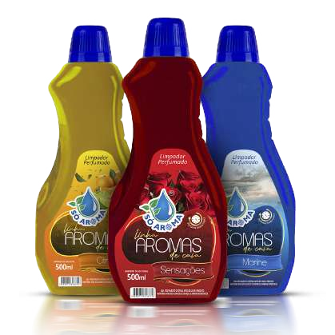

Limpadores Perfumados
Citrus, Marine e Sensações trazem fragrâncias frescas que limpam profundamente e deixam o ambiente com um perfume suave e duradouro, criando uma sensação de frescor e acolhimento.
Disponível em embalagens de: 1 Litro e 500ml.
Downloads
